A practical guide to mastering the galaxy with NPA. This manual provides clear, visual walkthroughs of the planning tools, overlays, and coordination features designed to give you a tactical edge in Neptune's Pride.
Section 001
How To Read The Battle HUD
The battle HUD is not one isolated panel. It is a set of map overlays, ETA labels, and control shortcuts that help you inspect a frontline star, plan enemy movement, and model worst-case combat assumptions.
Create a fake enemy fleet from the selected frontline star
To plan for incoming attacks, you can create "synthetic" fleets to model enemy movement. Select an enemy star (such as Hot Sham in the example below) and press x to create a fake enemy fleet. NPA temporarily switches your planning context to that empire so you can plot routes and see exactly when they might arrive at your stars without changing the real game state.
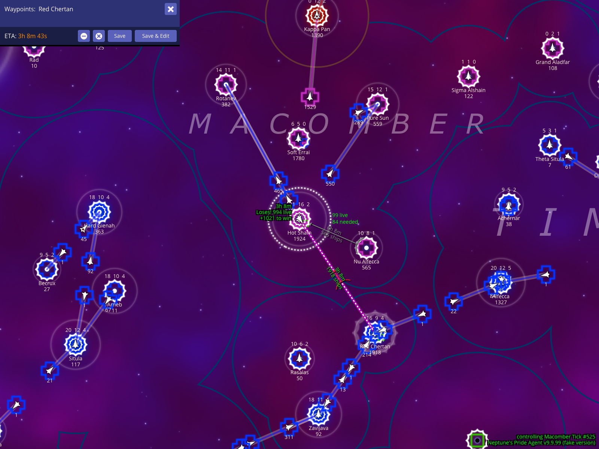
Create a fake enemy fleet from the selected frontline star
How to use it
Select the enemy star you want to inspect.
Press x to create a fake planning fleet from that star.
Add waypoints to nearby stars (like Red Chertan in the example) to see potential travel times.
What to expect
As shown in the screenshot, the route line runs from the selected star toward your waypoints.
The map overlay indicates you are temporarily controlling the selected enemy empire for planning.
The waypoint editor displays an ETA using your currently selected timebase.
Caveats
Use these fake routes to identify the exact moment an enemy fleet could reach your territory. These orders are for local planning only and do not affect the live game.
Show the battle ETA as clock time
NPA allows you to view ETAs in three different formats. Press % to cycle through these modes. Each serves a different tactical purpose: Clock Time (for personal alarms), Relative Ticks (for comparing speeds), and Absolute Ticks (for coordinating with allies).
Show the battle ETA as clock time
How to use it
With a fleet route visible, press % once to switch to clock-time mode.
Read the ETA line in the waypoint editor as a real-world time.
What to expect
Clock mode shows a real-world timestamp such as 11:40 AM.
The selected fake fleet and route stay in the same map frame while the ETA display changes.
Caveats
Use clock mode for your own alarms. Allies in other timezones should usually coordinate by tick number instead.
Show the battle ETA as relative ticks
Relative ticks are best when you are comparing your selected fleet against other moving fleets on the map, because tick offsets are easier to compare than the game's default real-time display.
Show the battle ETA as relative ticks
How to use it
After clock-time mode is visible, press % one more time.
Read the ETA and production readouts as relative tick counts.
What to expect
Relative tick mode changes the ETA into a duration such as 4 ticks.
The waypoint panel, production readout, and route stay aligned with the chosen timebase.
Show the same battle ETA as absolute tick numbers
Absolute tick numbers are the best timebase for ally coordination because everyone sees the same tick even when their local clock time differs.
Show the same battle ETA as absolute tick numbers
How to use it
After reaching relative tick mode, press % one more time.
Read the ETA and production readouts as explicit tick numbers (e.g., Tick #529).
What to expect
As seen in the example, the same route now shows an exact destination tick.
You can compare the fleet ETA directly against combat or production timing discussed in reports and chat.
Model a worst-case fight by giving the enemy extra weapons
You can manually adjust the weapons technology assumptions for a fight to see if your defense holds up against a more advanced enemy. Press . to add a weapons level to the side NPA is currently treating as the opponent.
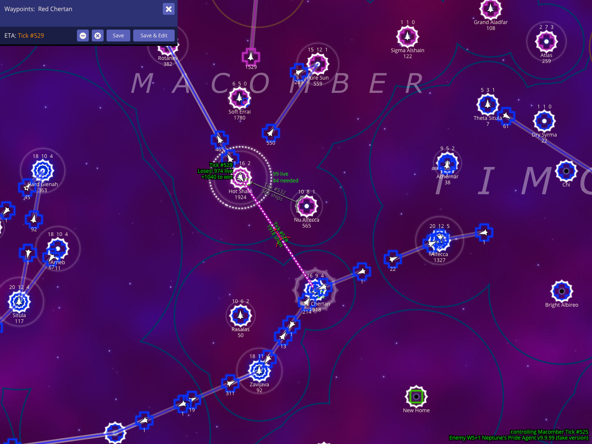
Model a worst-case fight by giving the enemy extra weapons
How to use it
With a battle route selected, press . to increase the enemy weapons assumption by one level.
What to expect
The footer overlay changes to show the adjustment, for example Enemy WS+1.
The projected survivor estimates update immediately to reflect the harsher combat assumption.
Caveats
Always test your critical defenses against Enemy WS+1. If you still win the fight under that assumption, your star is likely secure even if the enemy receives a technology gift from an ally.
This is a planning aid. It changes NPA's local calculation, not the real weapons tech on the server.
Return to the regular weapons calculation
Press , to remove weapons adjustments and return the battle HUD to the regular calculation. This gives you a visual checkpoint for the baseline survivor estimate before trying the opposite assumption.
Return to the regular weapons calculation
How to use it
Start from the Enemy WS+1 view.
Press , once to step the weapons adjustment back to zero.
What to expect
The footer no longer shows an adjustment, returning you to the baseline projection.
The selected synthetic fleet and route toward its destination remain visible for easy comparison.
Model the opposite weapons advantage with My WS-1
Press , again to continue past the regular calculation into My WS-1. A negative local weapons adjustment grants the other side of the battle the weapons advantage for the local projection.
Model the opposite weapons advantage with My WS-1
How to use it
Start from the regular weapons calculation.
Press , one more time to display My WS-1.
What to expect
The footer overlay changes to show My WS-1.
The survivor estimate reflects the opposite weapons assumption, effectively granting your opponent the advantage.
Caveats
These adjustments follow the same perspective rule: the label is relative to the side NPA is currently modeling as 'you' in the planning view.
Section 002
Territory Display And Scanning HUD
The territory and scanning HUD overlays provide essential context for both logistics and intelligence. They visualize the scanning and fleet range of any selected empire, helping you identify safe routes and imminent threats at a glance.
Visualize empire reach with territory overlays
Selecting any star highlights the territory owned by that empire, visualizing both their current scanning range and their immediate fleet reach. This overlay is a vital tool for understanding the "shape" of an empire and where its influence begins and ends.
Visualize empire reach with territory overlays
How to use it
Select any star on the map to see the territory of its owner.
Zoom out to see the full extent of their local reach.
What to expect
The map displays a shaded overlay representing the empire's scanning and fleet coverage.
Neighboring stars (such as Mega Segin in the example) remain visible for spatial orientation.
Cycle to territory rendering style: Bright Haze
NPA offers four distinct rendering styles so you can choose the one that provides the best clarity for your current needs: Dim Haze, Bright Haze, Black Background with Outlines, and Outlines Only.
Cycle to territory rendering style: Bright Haze
How to use it
Press Ctrl+9 to cycle through the available styles.
What to expect
The rendering updates to the Bright Haze style.
The view remains centered so you can easily compare the visual impact of each mode.
Cycle to territory rendering style: Black Background with Outlines
NPA offers four distinct rendering styles so you can choose the one that provides the best clarity for your current needs: Dim Haze, Bright Haze, Black Background with Outlines, and Outlines Only.
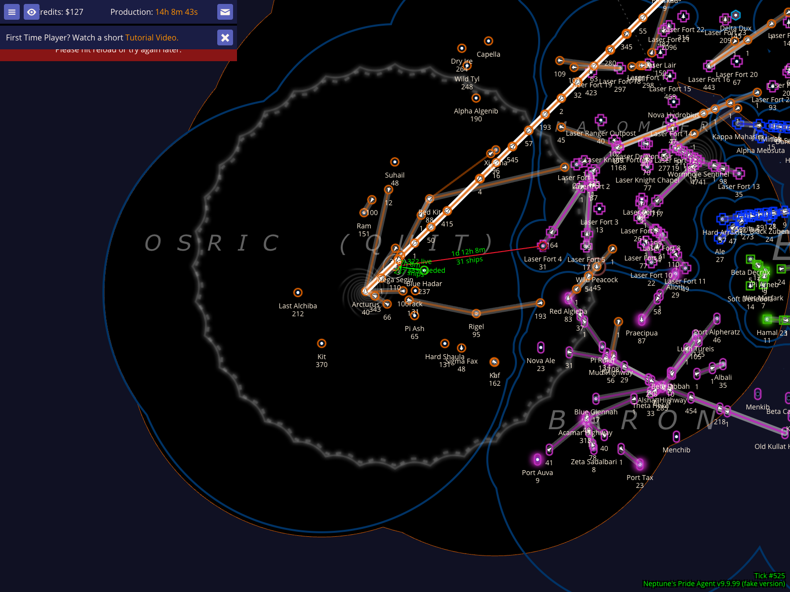
Cycle to territory rendering style: Black Background with Outlines
How to use it
Press Ctrl+9 to cycle through the available styles.
What to expect
The rendering updates to the Black Background with Outlines style.
The view remains centered so you can easily compare the visual impact of each mode.
Cycle to territory rendering style: Outlines Only
NPA offers four distinct rendering styles so you can choose the one that provides the best clarity for your current needs: Dim Haze, Bright Haze, Black Background with Outlines, and Outlines Only.
Cycle to territory rendering style: Outlines Only
How to use it
Press Ctrl+9 to cycle through the available styles.
What to expect
The rendering updates to the Outlines Only style.
The view remains centered so you can easily compare the visual impact of each mode.
Toggle political map borders and empire names
To further reduce map clutter, you can toggle the game's default political map borders and empire names off or on. This is especially useful when the map is crowded with fleet routes or scanning ETAs.
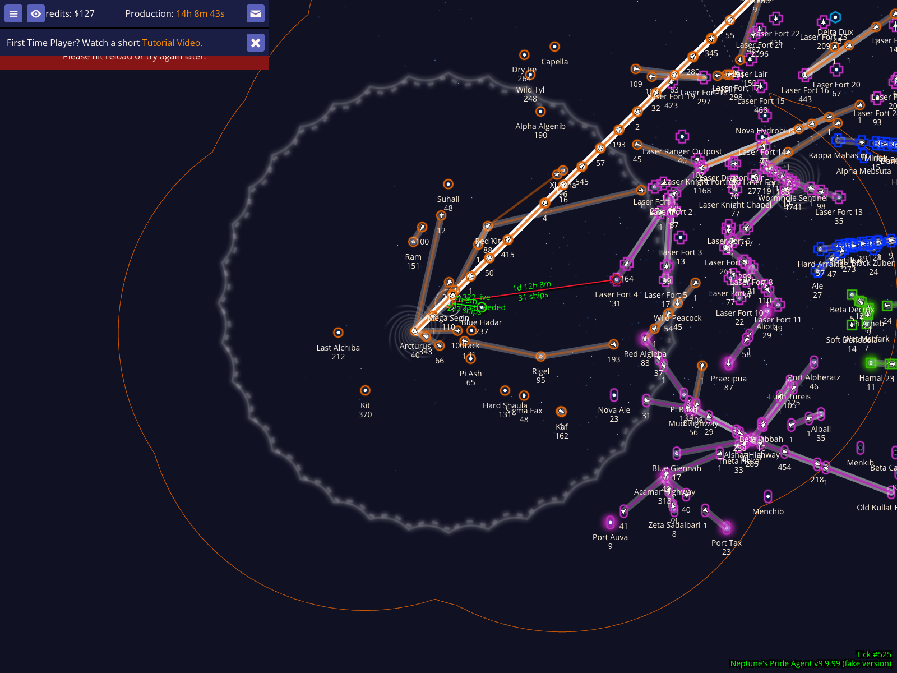
Toggle political map borders and empire names
How to use it
Press Ctrl+0 to toggle the visibility of political borders and empire labels.
What to expect
The political borders and empire name labels disappear or reappear immediately.
Recolor your empire white on the map
If your player color is difficult to see against the background or neighboring empires, you can toggle your own empire's color to white. This is a local visual aid that helps you track your own borders more easily without affecting other players.
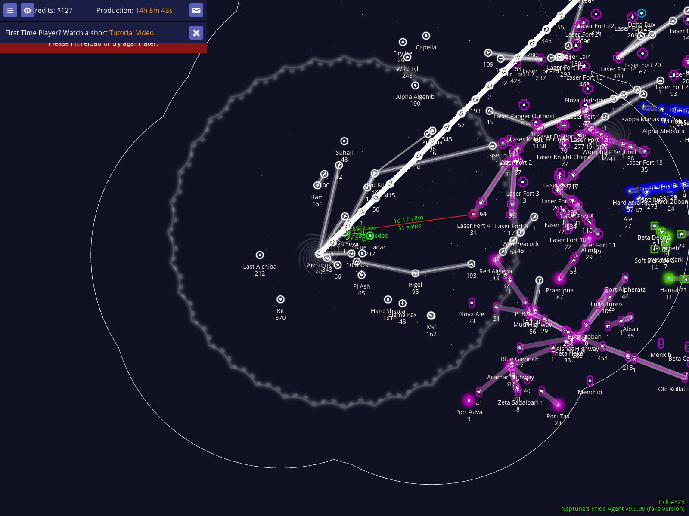
Recolor your empire white on the map
How to use it
Select one of your own stars.
Press w to toggle your map color to white.
What to expect
Your empire's map color changes to white, as seen in the screenshot.
Green and Grey Scan ETAs for multiple fleets
Knowing exactly when a fleet will be detected is critical for timing your maneuvers. NPA displays color-coded scan ETA labels for fleets approaching a star. In this example, the enemy star Alshat is being approached by multiple fleets.
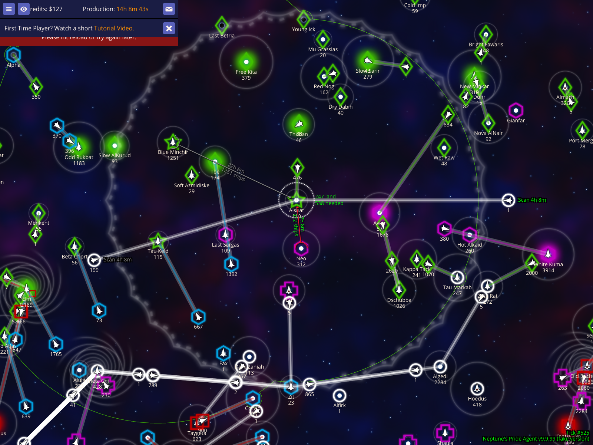
Green and Grey Scan ETAs for multiple fleets
How to use it
Select an enemy star that fleets are approaching.
Look for the distinct color-coded ETA labels near each fleet icon.
What to expect
Green Labels: Indicate a "dark" fleet's first-time detection by this star.
Grey Labels: Indicate when this star will gain a scan lock on a fleet that is already visible via other stars.
Measure scan ETA with a fake fleet route
You can also use fake fleets to plan routes and see exactly when they will enter enemy scan. This is vital for timing 'dark' jumps where you want to arrive or change course just before being detected.
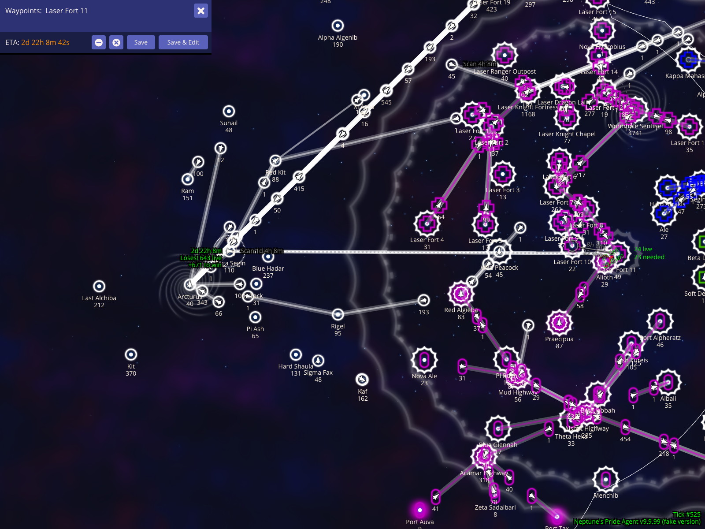
Measure scan ETA with a fake fleet route
How to use it
Press x to create a fake planning fleet.
Add waypoints to the destination.
Select the destination star (like ${TARGET_STAR_NAME} in the example) to see the scan ETA for that route.
What to expect
As shown in the screenshot, the scan HUD displays the expected entry tick for the planned route.
Section 003
Interpreting and Controlling the Auto-Ruler
The auto-ruler is a tactical overlay that automatically measures distances and arrival times between a selected star and its neighbors. It helps you quickly identify which of your stars can provide timely support and how soon enemy threats might arrive.
View automatic distance measurements to the nearest stars
When you select a star, NPA automatically draws 'ruler' lines to the most relevant neighboring stars. These lines provide immediate tactical information without requiring you to manually measure each route.
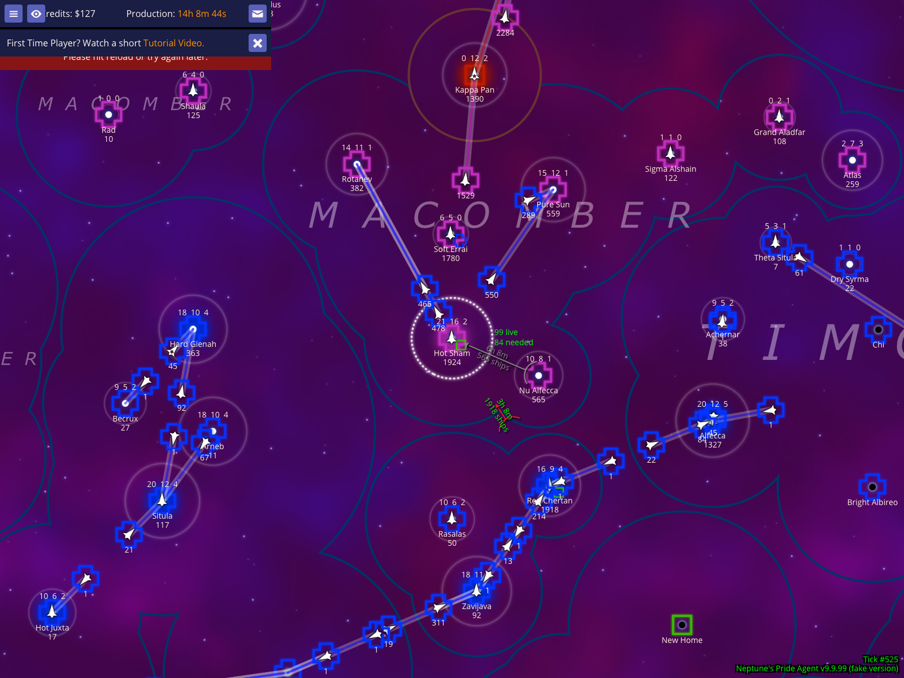
View automatic distance measurements to the nearest stars
How to use it
Select a star on the map (like Hot Sham in the example) to activate the auto-ruler.
Look for the colored lines extending to nearby stars.
What to expect
Red Lines indicate connections to enemy-owned stars.
Green or Grey Lines indicate connections to stars owned by you or your allies.
Tick numbers (e.g., [[Tick #529]]) show exactly when a fleet traveling at your current speed would arrive.
Increase the number of stars shown by the auto-ruler
You can control how many neighbors the auto-ruler identifies. Increasing the power reveals more distant threats and potential support stars.
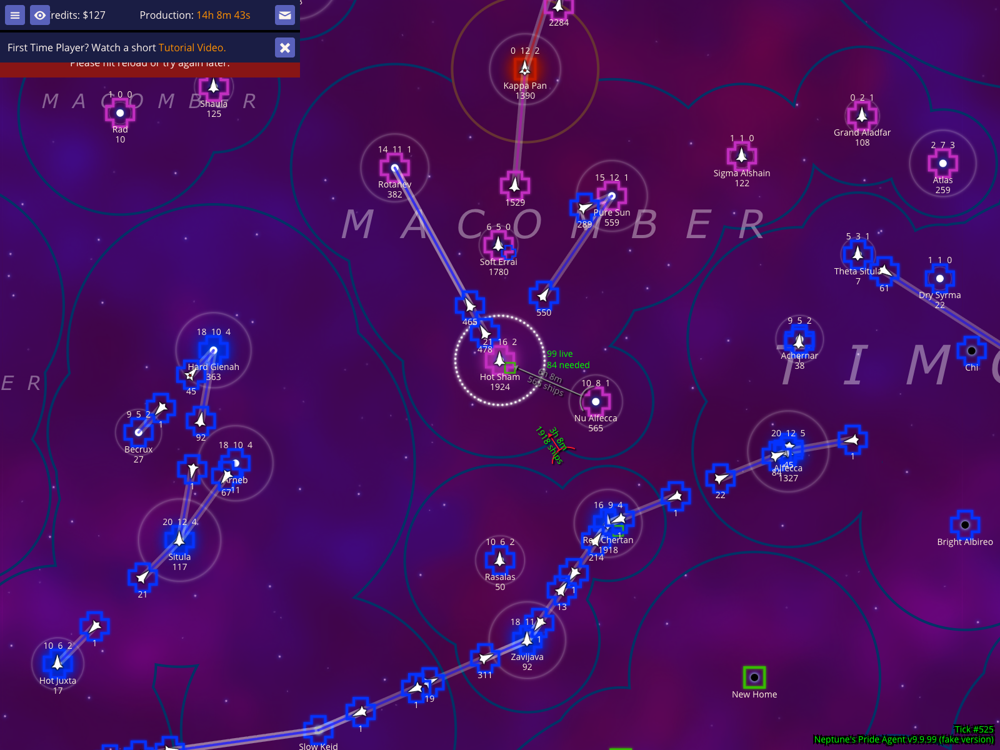
Increase the number of stars shown by the auto-ruler
How to use it
Press 9 to increase the number of stars the auto-ruler connects to.
What to expect
More ruler lines appear on the map, reaching further out from the selected star.
Decrease the number of stars shown by the auto-ruler
If the map becomes too cluttered, you can decrease the auto-ruler power to focus only on the most immediate neighbors.
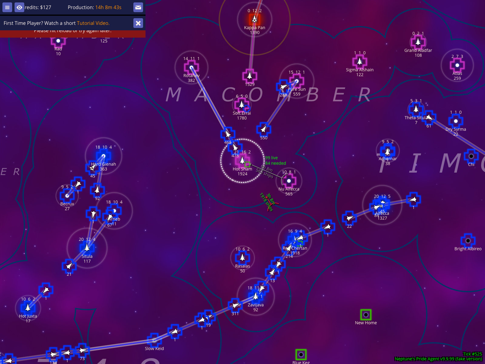
Decrease the number of stars shown by the auto-ruler
How to use it
Press 8 to decrease the number of stars the auto-ruler connects to.
What to expect
Distant ruler lines disappear, leaving only the closest connections visible.
Distinguish between effective and ineffective support
The auto-ruler uses color to help you make split-second defensive decisions. It compares the arrival time of enemy fleets against your own support fleets.
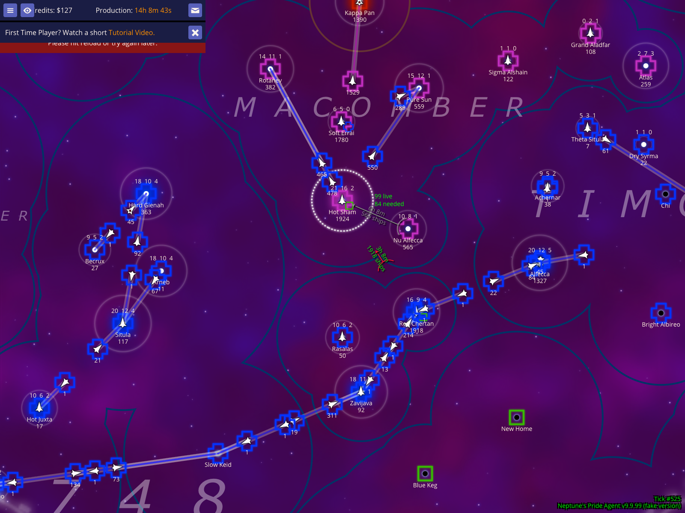
Distinguish between effective and ineffective support
How to use it
Observe the colors of the lines connecting to your own stars.
What to expect
Green Lines represent 'Effective' support: these stars can reach the selected location *before* the closest enemy can.
Grey Lines represent 'Ineffective' support: these stars are too far away to help before the enemy arrives.
Caveats
Support effectiveness is calculated based on the closest detected enemy star. Always verify if the enemy has closer hidden fleets.
Section 004
Star and Fleet Reports
NPA provides a variety of detailed reports to help you track your empire's status and monitor enemy movements. These reports can be viewed directly in the Agent UI or copied to the clipboard for sharing in diplomatic messages.
Open the NP Agent UI
Access the central intelligence hub by pressing ` (backtick). This opens the NPA report screen where you can select from a wide range of automated analysis tools.
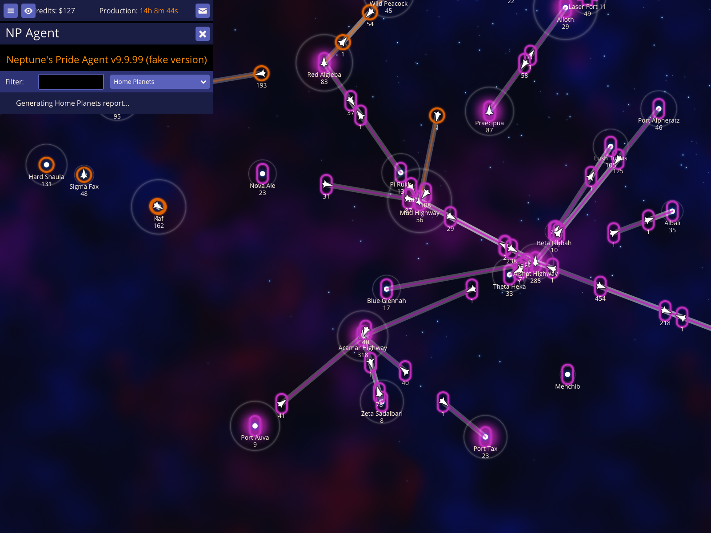
Open the NP Agent UI
How to use it
Press ` to open the Agent UI.
What to expect
The NP Agent overlay appears, showing a report selector and a filter input.
View the Stars report
The Stars report provides a comprehensive breakdown of every star currently within your scanning range, grouped by owner. It includes infrastructure levels (Economy/Industry/Science) and total defensive ship counts.
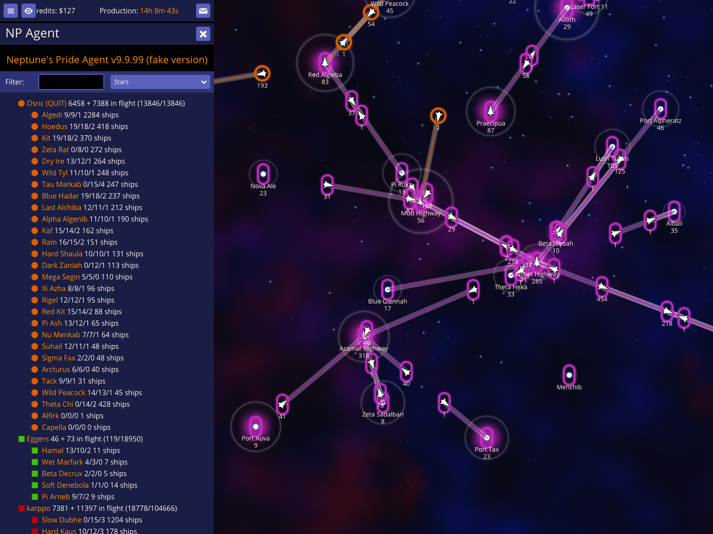
View the Stars report
How to use it
Open the Agent UI (`).
Select Stars from the dropdown menu.
What to expect
A detailed list of stars appears, showing production and ship totals for each player.
View the Fleets (short) report
The Fleets (short) report is a high-level summary of active fleet movements. It lists upcoming arrivals and provides a total count of ships in flight for every visible empire.
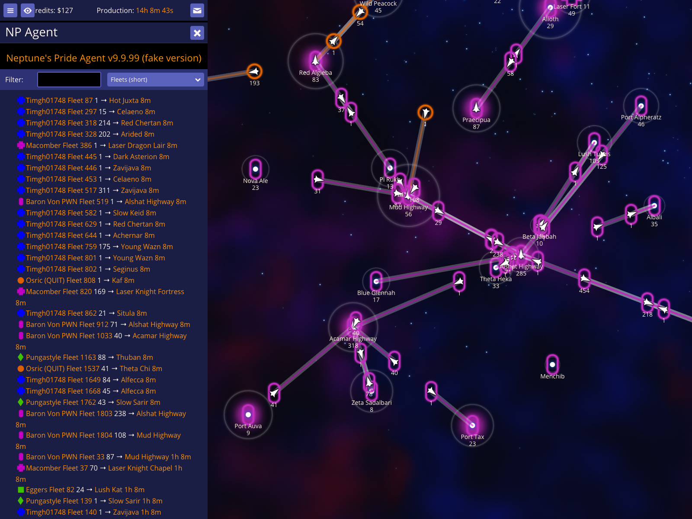
View the Fleets (short) report
How to use it
Select Fleets (short) from the report dropdown.
What to expect
The report displays a chronological list of fleet arrivals followed by per-player totals.
View the Fleets (long) report
For a deeper analysis, the Fleets (long) report calculates the projected outcome of every visible fleet movement. It accounts for weapons technology and defensive bonuses to show you exactly how many ships are expected to survive each encounter.
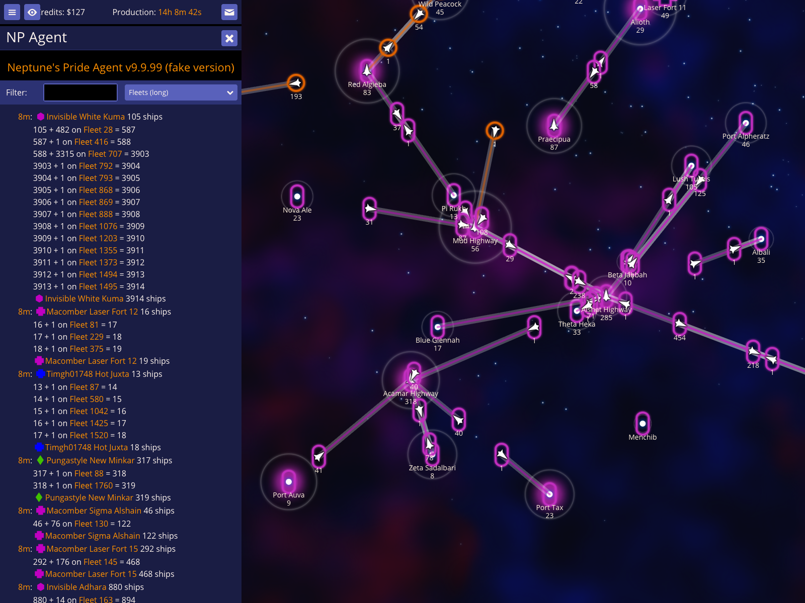
View the Fleets (long) report
How to use it
Select Fleets (long) from the report dropdown.
What to expect
A detailed breakdown of every flight appears, including projected survivors for defenders or attackers.
View the Home Planets report
The Home Planets report cross-references every player with their starting star. This is invaluable for identifying player numbers (e.g., Player #5) and tracking whether an empire still controls its original capital.
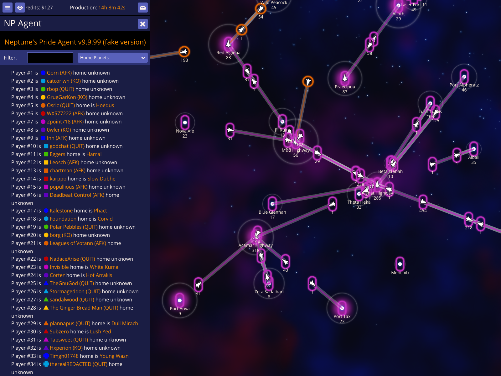
View the Home Planets report
How to use it
Select Home Planets from the report dropdown.
What to expect
The report lists each player number, their current alias, and their home star status.
Section 012
Autocomplete
Autocomplete is a powerful feature when composing messages to other players. NPA provides several triggers to help you quickly insert player names and star names into text fields.
Autocompleting a player name by their ID
You can quickly insert a player's name by their numeric ID when writing messages.
Autocompleting a player name by their ID
How to use it
Open the Compose message screen.
Type [[ followed by the player's ID number.
Press ] to complete the name.
What to expect
The [[ID]] sequence is replaced by the player's full alias enclosed in double brackets.
Cycling through multiple players matching a prefix
When multiple players match your search, you can cycle through them using the completion key.
Cycling through multiple players matching a prefix
How to use it
Type [[ followed by the start of a player's name.
Press ] repeatedly to cycle through all matching players.
What to expect
NPA cycles through all players whose names contain the text you typed.
Autocompleting star names
Star names can also be autocompleted, making it easy to coordinate with allies.
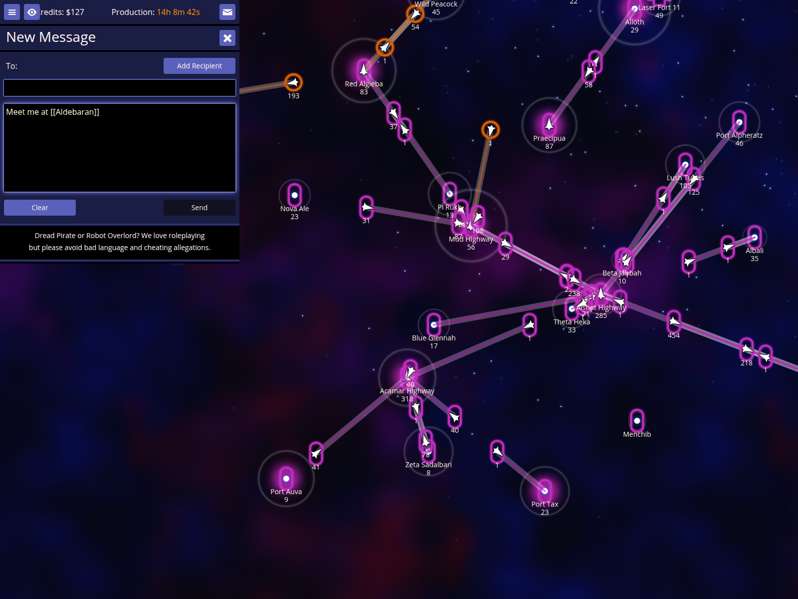
Autocompleting star names
How to use it
Type [[ followed by part of a star's name.
Press ] to complete the name.
What to expect
The star name is inserted, correctly formatted for game links.